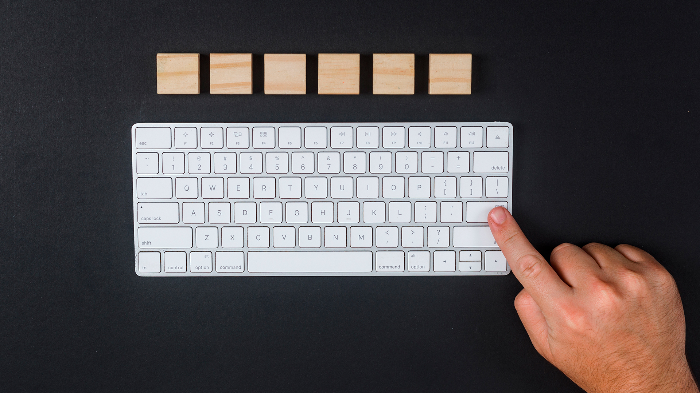
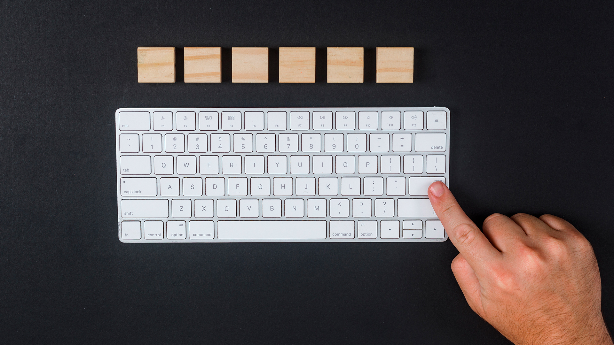

Mouse Mecánico
También llamado ratón de bola, por contener una esfera de plástico en su parte inferior. La misma sirve para enviar información al ordenador sobre los movimientos del mouse en una superficie plana, para procesarlos y representarlos gráficamente en la pantalla. Estos tipos de mouse de computadora están casi en desuso por el avance de la tecnología. Tienen un funcionamiento interno donde se cuentan los pulsos que realiza su esfera en cada desplazamiento, entre dos ejes giratorios perpendiculares, generando impulsos eléctricos interpretados por el ordenador.
Mouse óptico
Estos tipos de mouse de computadora utilizan sensores, permitiéndole al usuario utilizar el ordenador con una mayor precisión, de una manera más limpia y menor ruido comparado con los ratones mecánico. La bola de plástico que tienen los tipos de ratones pc de bola, generan una acumulación de polvo luego de un tiempo y con esta clasificación de mouse nos olvidaremos de eso. El mouse óptico funciona con un sensor óptico que reconoce la superficie plana donde hace sus desplazamientos. El área, para su correcto funcionamiento, debe ser opaca (puede ser una alfombrilla), ya que se desempeñan mal en espacios trasparentes o brillantes.
Mouse láser
Este tipo de ratón de computadora funciona con un led láser de gran potencia, concentrado en un punto, que le permite detectar los distintos movimientos del dispositivo de entrada y sobre varias superficies. En los desplazamientos utiliza un láser con tecnología óptica de alta resolución (mayor a un ratón óptico), que le permite una mejor precisión, sensibilidad y un manejo más eficiente de la computadora.
Otros componentes

 
